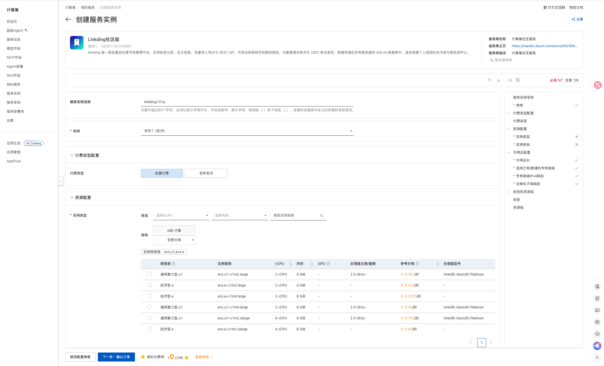
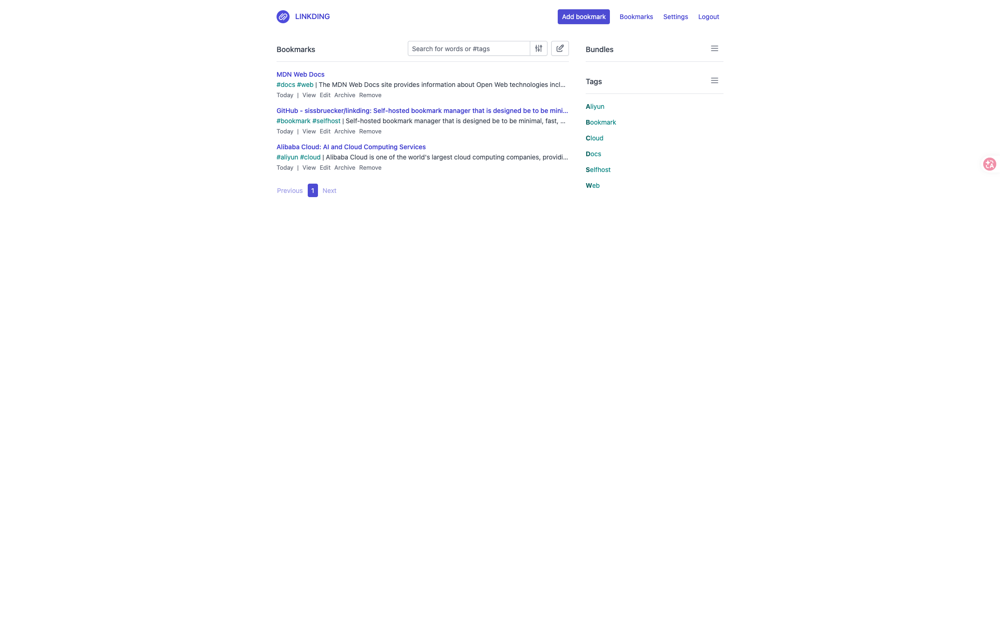

Linkding 是一款 MIT 许可开源自托管的书签管理器：把浏览器收藏夹搬到自己的服务器上，用标签、关键词和分面组合检索，几十万条书签也不会卡；支持导入浏览器导出的收藏夹文件、提供 REST API 与浏览器扩展，书签数据保存在实例本机的 SQLite 数据库里，不依赖任何第三方在线服务。
本计算巢服务采用单机 ECS 部署，ECS 镜像内已预置 Linkding 与 Docker Compose 运行环境，数据全部保存在实例本机。
访问入口为实例公网 IP 的 9090 端口。打开地址会跳转到书签页并要求登录，用户名固定为 admin，初始密码在服务实例输出中查看。
通过此服务模板构建服务不产生费用。用户部署服务实例时，资源费用主要涉及：
计费方式支持按量付费和包年包月，预估费用会在部署前实时展示。
若使用 RAM 用户创建服务实例，需要在创建服务实例前为该 RAM 用户添加相应权限。
| 权限策略名称 | 备注 |
|---|---|
| AliyunECSFullAccess | 管理云服务器 ECS 的权限 |
| AliyunVPCFullAccess | 管理专有网络 VPC 的权限 |
| AliyunROSFullAccess | 管理资源编排 ROS 的权限 |
| AliyunComputeNestUserFullAccess | 管理计算巢服务用户侧资源的权限 |

确认询价明细后点击 下一步：确认订单，同意服务协议并点击 立即创建。
等待服务实例部署完成。部署完成后，在服务实例详情页的 输出 区域查看 linkding_9090_url 访问地址与管理员密码。
用浏览器打开输出中的访问地址（http://<实例公网IP>:9090），使用用户名 admin 与输出中的管理员密码登录，通过 Add bookmark 保存第一条书签。

登录后在书签列表顶部的 URL 输入框粘贴地址并保存即可；也可以在详情页补充标题、描述与标签。标签支持 + 组合与排除语法，用于在列表里做分面检索。
在设置页使用「Import」导入浏览器导出的书签 HTML 文件，也可以在实例内使用 manage.py 批量操作。导入过程只在本机执行，不会把书签发送到外部服务。
书签与账号数据保存在实例系统盘的 /opt/linkding/data 目录（SQLite 数据库 db.sqlite3、assets、favicons、previews 与 secretkey.txt），执行 docker compose down 或重启实例不会丢数据；释放实例即全部丢失，请定期备份该目录。
初始密码只在首次启动创建账号时生效，之后修改 .env 里的密码不会改变已有账号。如需改密，登录后进入 Settings 页点击 Change password，或登录实例执行 cd /opt/linkding && docker compose exec linkding python manage.py changepassword admin。
登录实例编辑 /opt/linkding/.env，然后执行 cd /opt/linkding && docker compose up -d 生效；.env 中的键值会以环境变量方式注入容器。
| 参数 | 说明 | 默认值 |
|---|---|---|
| VpcOption | 网络类型，新建 VPC 或使用已有 VPC | NewVPC |
| VpcCidrBlock | 新建 VPC 的网段 | 192.168.0.0/16 |
| VSwitchCidrBlock | 新建交换机的网段 | 192.168.1.0/24 |
| EcsInstanceType | ECS 实例规格，最低 2 vCPU 4 GiB | 无 |
| InstancePassword | 实例登录密码 | 无 |
| PayType | 付费类型 | PostPaid |
| ZoneId | 可用区 | 无 |
| VpcId / VSwitchId | 已有 VPC 与交换机 ID（选择已有 VPC 时填写） | 空 |
| 输出 | 说明 |
|---|---|
| linkding_9090_url | Linkding 访问地址（端口 9090） |
| AdminUsername | 管理员用户名（admin） |
| AdminPassword | 系统随机生成的管理员密码 |
| DataPersistenceNote | 数据目录与备份说明 |
| MetadataFetchNote | 网页标题与图标抓取说明 |
| SnapshotNote | 网页快照能力说明 |
LD_DISABLE_BACKGROUND_TASKS=True 关闭后台任务。LD_ALLOWED_INTERNAL_HOSTS 放行对应主机。/api/bookmarks/singlefile/ 接口，REST API 令牌可在登录后的 Settings 页生成。/opt/linkding/data，释放服务实例会一并删除，请提前备份。登录提示用户名或密码错误？
用户名固定为 admin，密码在服务实例输出的 AdminPassword 中；如果改过密码，请使用修改后的密码。
书签保存后没有标题和图标？ 标题与图标由后台任务抓取，需要实例能访问外网；抓取失败不影响书签本身，可以稍后手动编辑补充。
需要给其他系统开放 API？
在 Settings 页生成 REST API 令牌，调用方以 Authorization: Token <令牌> 访问 /api/bookmarks/ 等接口。